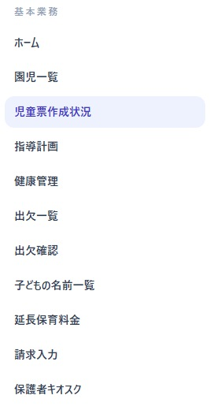
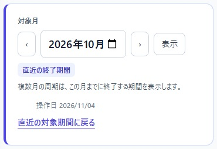
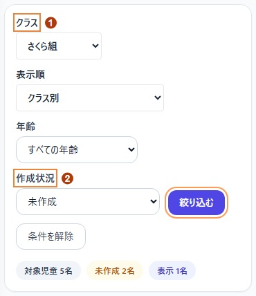
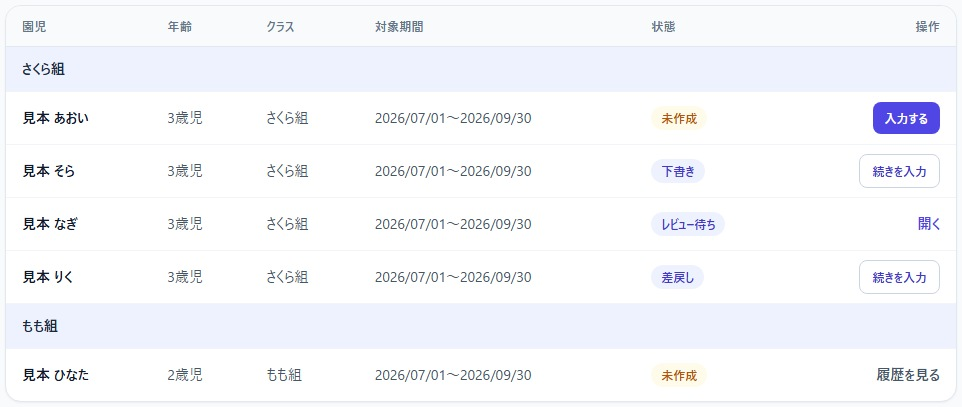
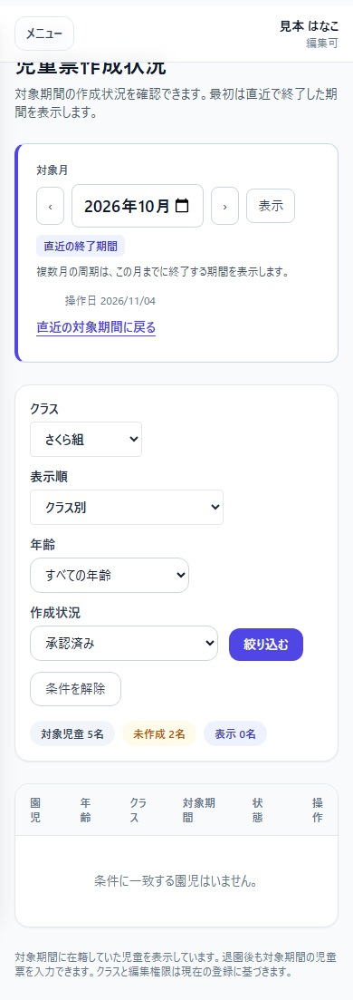

職員メニューの「基本業務」で、「児童票作成状況」を押します。スマートフォンでは、先に左上の「メニュー」を押します。
「うちのクラスで、まだ児童票を書いていないのは誰？」と思ったときに使います。途中まで書いた児童票も、ここから開けます。

職員メニューの「基本業務」で、「児童票作成状況」を押します。スマートフォンでは、先に左上の「メニュー」を押します。

画面を開くと、直近で終わった期間の児童票が出ます。一覧で、お子さんの名前と同じ行の「対象期間」を見ます。
たとえば11月に開くと、「対象月」は10月です。毎月書く園児は10月分、4月から3か月ごとに書く園児は7月〜9月分が出ます。
別の月を見たいときは「対象月」の左右の矢印で、ひと月ずつ移動できます。月を直接選んで一覧が切り替わらないときは「表示」を押します。元の期間に戻るには「直近の対象期間に戻る」を押します。

見本の「対象児童 5名」と「未作成 2名」は、条件を選ぶ前の人数です。「表示 1名」が、今の条件に合う人数です。
同じ年齢の園児を探すときは「年齢」を選びます。年齢ごとに並べたいときは「表示順」で「年齢別（年度4月1日時点）」を選びます。どちらも選んだ後に「絞り込む」を押します。
書きかけの児童票を探すときは、「作成状況」で「下書き」を選んで「絞り込む」を押します。
お子さんの名前と「対象期間」を確かめます。その行の右端にある「操作」から児童票を開きます。

書いた内容を残すときは「下書きを保存」を押します。「下書きを保存しました。」と出たら、「作成状況へ」を押して一覧に戻ります。

「表示 0名」は、今の条件に合う園児がいないという意味です。「条件を解除」を押し、同じ対象月でもう一度探します。
それでも見当たらないときは、お子さんが園に通っていた期間を確かめます。今は退園していても、その期間に在籍していれば一覧の対象になります。
見られるクラスや入力できる園児は、園の設定や現在の担当クラスで変わります。担当の園児が出ないときは、園児名と対象期間を園の管理者に伝えてください。
画面の人物・記録はすべて架空です。実際の入力や依頼は園のアプリで行います。2026年11月23日に保存済み配備版と照合したマニュアルです。